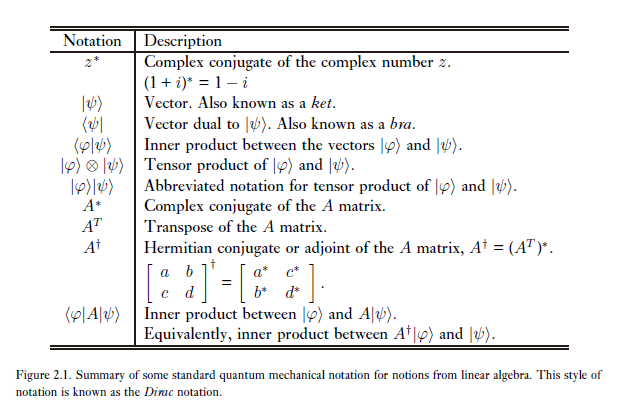

吾生而有涯而学而无涯 以有涯而逐无涯 殆矣！
# 量子力学引论
# 线性代数基础
# 记号

# 线性算子与矩阵
-
定义在空间 V 到空间 W 上的线性算子为对任一输入是线性的函数A:V→W 满足：
A(i∑ai∣ψ⟩)=i∑ai(A∣ψ⟩)
称 A 为线性算子。
-
线性算子常用矩阵来表示。考虑线性算子A:V→W
设∣v1⟩,...,∣vn⟩ 是空间V 的一组基，∣w1⟩,...,∣wm⟩ 是空间W 的一组基，若：
A∣vj⟩≡i∑Aij∣wi⟩
则Aij 为 A 的一个矩阵表示。
上式的意义为，把 A 作用于 V 中的每个基向量（此时 A 是抽象的算子而非矩阵），一定会得到 W 中的一个向量。而这个向量可以用 W 的基表示。将每个 V 中的基向量对应的 W 中的坐标放在一起，就可以精确地描述这个算子实际上进行了怎样的运算。
# Pauli 阵
I=(1001),X=(0110)Y=(0i−i0),Z=(100−1)
# 内积
-
内积定义为V×V→C 的函数，满足对任意∣v⟩,∣w⟩∈V：
-
(∣v⟩,i∑λi∣wi⟩)=i∑λi(∣v⟩,∣wi⟩)
-
(∣v⟩,∣w⟩)=(∣w⟩,∣v⟩)∗
-
(∣v⟩,∣v⟩)≥0,(∣v⟩,∣v⟩)=0iff∣v⟩=0
-
(i∑λi∣vi⟩,∣w⟩)=i∑λi∗(∣vi⟩,∣w⟩)
-
范束定义为|||v\rang||=\sqrt{\lang v|v\rang},\lang i|j\rang=\delta_
-
Schmidt 正交化
∣v1⟩=∣w1⟩∣vk+1⟩=∣∣∣wk+1⟩−∑i=1k⟨vi∣wk+1⟩∣vi⟩∣∣∣wk+1⟩−∑i=1k⟨vi∣wk+1⟩∣vi⟩
# 外积
-
对∣v⟩∈V,∣w⟩∈W, 外积∣w⟩⟨v∣ 定义为V→W 的算子，满足:
(∣w⟩⟨v∣)∣v′⟩=⟨v∣v′⟩∣w⟩
-
令∣vi⟩ 为空间V 的一组标准正交基，有:
∀∣v⟩∈V,i∑(∣vi⟩⟨vi∣)∣v⟩=i∑⟨vi∣v⟩∣vi⟩=∣v⟩(∣v⟩在∣i⟩上的投影为⟨vi∣v⟩)
所以，∑i∣i⟩⟨i∣=I
-
对任意一个V→W 的算子 A，它都可以表示成外积关系。
A=IWAIV=i,j∑∣wj⟩⟨wj∣A∣vi⟩⟨vi∣=i,j∑⟨wj∣A∣vi⟩∣wj⟩⟨vi∣
所以对于输入基∣vi⟩ 和输出基∣wi⟩，A 的矩阵表示中Aji=⟨wj∣A∣vi⟩
-
Cauchy-Schwarz 不等式
∣⟨v∣w⟩∣2≤⟨v∣v⟩⟨w∣w⟩
# 特征值与特征向量
- 若矩阵 A 是酉相似与对角阵，则它是酉可对角化的。即：
若A=U−1diag{λ1,...,λn}U,其中，U⊺U=U⊺U=I,则A=i∑λi∣λ=i⟩⟨λ=i∣
# Hermite 算子与伴随
-
设 A 是空间V 上的线性算子，则存在且只存在一个空间V 上的算子A⊺ 使得：
∀∣v⟩,∣w⟩∈V,(∣v⟩,A∣w⟩)=(A⊺∣v⟩,∣w⟩)
-
(AB)⊺=B⊺A⊺,(∣v⟩)⊺=⟨v∣A⊺=(A∗)T
-
设W 是 d 维空间V 的 k 维子空间，且∣v1⟩,...,∣vk⟩ 为W 的一组标准正交基，定义：
P≡i=1∑k∣vk⟩⟨vk∣
则 P 是 Hermite 的，即P⊺=P。我们称 P 为 “到空间 W 上的投影算子”，它的意义是，对于任意一个 V 中的向量∣v⟩，P∣v⟩=∑i=1k⟨vk∣v⟩∣vk⟩，其实就把∣v⟩ 分解到 W 的基上，从而去除和 W 正交的分量。（和数学中定义幂等算子为投影算子不等价！）
P 的正交补算子Q≡I−P 就是把向量投影到补空间上。显然(P+Q)∣v⟩=∣v⟩
-
投影算子满足P2=P，但反之不成立！
-
矩阵 A 是正规的当且仅当A⊺A=AA⊺。矩阵 A 可酉对角化（酉相似于对角阵，可对角化）当且仅当 A 是正规矩阵。（谱分解定理）
-
正规矩阵是 Hermite 的当且仅当它的特征值全为实数。
-
矩阵 A 是酉的当且仅当A⊺A=I
酉矩阵保持内积(U∣v⟩,U∣w⟩)=(U∣v⟩)⊺(U∣w⟩)=⟨v∣U⊺U∣w⟩=⟨v∣w⟩
因此，酉算子有很好的性质：
若∣vi⟩ 为一组标准正交基，则定义∣wi⟩≡U∣vi⟩ 也为一组标准正交基，且U=∑∣wi⟩⟨vi∣
反之，若∣wi⟩,∣vi⟩ 都为标准正交基，则∑∣wi⟩⟨vi∣ 是酉的。
-
酉矩阵所有特征值模均为一。即λ≡eiθ，Pauli 矩阵都是 Hermite 和酉的。
-
正定和半正定算子，即考量⟨v∣A∣v⟩ 是否恒大于（大于等于）零。
# 张量积
-
设∣i⟩ 为V 的一组标准正交基，∣j⟩ 为W 的一组标准正交基，则∣i⟩⊗∣j⟩ 为空间V⊗W (nm 维) 的一组标准正交基。
-
张量积满足：
-
z(∣v⟩⊗∣w⟩)=z∣v⟩⊗z∣w⟩
-
(∣v⟩+∣w⟩)⊗∣u⟩=∣v⟩⊗∣u⟩+∣w⟩⊗∣u⟩
-
∣u⟩⊗(∣v⟩+∣w⟩)=∣u⟩⊗∣v⟩+∣u⟩⊗∣w⟩
-
由此，可以定义定义在V⊗W 上的线性算子A⊗B 满足：
(A⊗B)(∣v⟩⊗∣w⟩)=A∣v⟩⊗B∣w⟩
(有点类似同构映射保持运算的意思。)
-
同样，可以定义V⊗W 上的自然内积为：
(∣v1⟩⊗∣w1⟩,∣v2⟩⊗∣w2⟩)=⟨v1∣v2⟩⟨w1∣w2⟩(i∑ai∣vi⟩⊗∣wi⟩,j∑bj∣vj′⟩⊗∣wj′⟩)=i,j∑ai∗bj⟨vi∣vj′⟩⟨wi∣wj′⟩
-
一个具体的张量积：Kronecker 积
Am×n⊗Bp×q=⎝⎛A11B...Am1BA12B...Am2.........A1nB...AmnB⎠⎞mp×nq
-
张量积对一些运算是分配的：
(A⊗B)∗=A∗⊗B∗,(A⊗B)T=AT⊗BT,(A⊗B)⊺=A⊺⊗B⊺
-
两个酉算子张量积是酉的，两个 Hermite 张量积是 Hermite 的，两个半正定算子的张量积是半正定的，两个投影算子的张量积是投影算子。
# 算子函数
-
算子函数定义在正规算子上。f(A)=f(∑λi∣i⟩⟨i∣)=∑f(λi)∣i⟩⟨i∣
-
算子的迹定义为算子任意一个矩阵表示的对角线元素和。不难证明tr(AB)=tr(BA),tr(zA)=ztr(A)，且矩阵的迹在酉相似下保持不变。故可定义为任意一个矩阵表示。
-
tr(A∣ψ⟩⟨ψ∣)=∑⟨i∣A∣ψ⟩⟨ψ∣i⟩=⟨ψ∣A∣ψ⟩,∣i⟩=(0,0,...,1(第i个),...,0)T
# 对易式与反对易式
-
对易式[A,B]≡AB−BA，反对易式{A,B}=AB+BA，若[A,B]=0，则称 A,B 为对易的。
-
同时对角化定理：设 A,B 是 Hermite 算子，当且仅当存在一个标准正交基，使得 A 和 B 在这个基下同时是可酉对角化的，则[A,B]=0，在这种情况下，称 A,B 可同时对角化。
A=Q−1D1Q,B=Q−1D2Q,Q⊺Q=I⇔[A,B]=0
-
AB=2[A,B]+{A,B}
# 极式分解和奇异值分解
-
极式分解：令 A 是空间 V 上的线性算子，则存在酉算子 U 和半正定算子 J,K 满足：
A=UJ=KU,其中J≡A⊺A,U≡AA⊺而且若A可逆，则U也唯一
-
奇异值分解：令 A 是一方阵，则必存在酉矩阵 U,V 和一个非负对角阵 D，使得：
A=UDV
简单证明：
A=SJ(极值分解)J=TDT⊺(J=A⊺A酉相似于对角阵，T为酉矩阵)所以A=(ST)D(T⊺)=UDV
其中 D 的对角元素称为 A 的奇异值。
# 量子力学假设
# 假设一：状态空间
-
假设 1：任一一个孤立物理系统都有一个称为系统状态空间的复内积向量空间（即 Hilbert 空间）与之练习，系统完全由状态向量所描述，这个向量是系统状态空间的第一单位向量。
-
例：一个量子比特的状态空间（二维）。状态空间中的任意状态向量可写作
∣ψ⟩=a∣0⟩+b∣1⟩,a,b∈C
而∣a∣2+∣b∣2=1 常称为状态向量的归一化条件。
-
任意线性组合∑iαi∣ψi⟩ 理解为状态∣ψi⟩ 具有幅度αi 的一个叠加。
# 假设二：演化
-
假设 2：一个封闭量子系统的演化可以由一个酉变化来刻画。即系统在时刻t1 的状态∣ψ1⟩ 和在t2 的状态∣ψ2⟩ 可以通过一个仅依赖时间t1,t2 的酉算子来联系：
∣ψ2⟩=U(t1,t2)∣ψ1⟩,whereU⊺U=UU⊺=I
-
Pauli 矩阵中 X 被称为比特翻转（bit flip）矩阵，Z 被称为相位翻转（phase flip）矩阵。
-
假设 2‘：封闭量子系统的演化由薛定谔方程描述：
iℏdtd∣ψ⟩=H∣ψ⟩
其中，H 称为封闭系统 Hamilton 量固定 Hermite 算子，常用实验得出。
而因为 H 是 Hermite 的，故有谱分解：
H=E∑E∣E⟩⟨E∣
其中，状态∣E⟩ 习惯上称作能量本征态（energy eigenstate）或定态（stationary state），而E 是∣E⟩ 的能量。最小的 E 称为系统的基态能量（ground state energy），相应的能量本征态（或本征空间）称为基态（ground state）。
* 状态∣E⟩ 常被称作定态是因为它们随时间的变化只是一个数值因子：
∣E⟩→exp(ℏ−iEt)∣E⟩
-
薛定谔方程的解：
∣ψ(t2)⟩=exp(ℏ−iH(t2−t1))∣ψ(t1)⟩
其中U(t1,t2)≡exp[ℏ−iH(t2−t1)] 为假设 2 中描述的一个 “仅依赖于t1,t2 的酉算子”
-
常有以下说法：
“把一个酉算子应用到一个特定的量子系统上”（applying a unitary operator to a particular quantum system），量子系统在和 “我们” 相互作用后将不再封闭。但状态向量仍可以用另一个 Hamilton 量相近似。
# 假设三：量子观测
-
假设 3：量子观测由一组观测算子{Mm} 描述，这些算子作用在被测系统状态空间上，指标m 表示实验中可能的观测结果。若在观测前，量子系统最新状态是∣ψ⟩，则结果m 发生的可能性是：
p(m)=⟨ψ∣Mm⊺Mm∣ψ⟩=tr(∣ψ⟩⟨ψ∣Mm⊺Mm)
且观测后系统的状态为：
∣ψ′⟩=⟨ψ∣Mm⊺Mm∣ψ⟩Mm∣ψ⟩
假设内容包括：观测算子Mm 满足完备性方程：∑mMm⊺Mm=I，因此：
m∑p(m)=m∑tr(∣ψ⟩⟨ψ∣Mm⊺Mm)=tr(∣ψ⟩⟨ψ∣m∑Mm⊺Mm)=tr(∣ψ⟩⟨ψ∣I)=⟨ψ∣I∣ψ⟩=1
-
我自己对 “quantum measurement operator” 的理解：
Mm，其中，m 表示实验结果。譬如一个系统有状态∣ψ1⟩,∣ψ2⟩，观测这个系统这样一个实验的结果只有 2 种 (1, 2)：
-
若⟨ψ1∣M1∣ψ1⟩=1,⟨ψ1∣M2∣ψ1⟩=0，我理解为：若系统状态为∣ψ1⟩，则观测结果一定为 1.
若⟨ψ2∣M1∣ψ2⟩=0.75,⟨ψ2∣M2∣ψ2⟩=0.25，我理解为：若系统状态为∣ψ2⟩，则有 75% 的概率观测到结果 1，25% 概率观测到结果 2.
因此，在这样的假设下，若不知道系统状态下进行观测，若观测到结果 1，则无法确定系统是哪个状态；但如果观测到结果 2，则确定系统状态为∣ψ2⟩。
-
但若⟨ψ1∣M1∣ψ1⟩=1,⟨ψ1∣M2∣ψ1⟩=0,⟨ψ2∣M1∣ψ2⟩=0,⟨ψ2∣M2∣ψ2⟩=1，则发现系统状态与实验结果是一一对应的。即出现结果 2，可以肯定系统状态是∣ψ2⟩；出现结果 1，可以肯定系统状态是∣ψ1⟩。
若存在这样的观测实验（观测算子），则状态∣ψ1⟩,∣ψ2⟩ 是可区分的。
-
特别地，还有一种情况。若系统只有两个状态，某个观测实验却有三个观测结果。如果状态为∣ψ1⟩，则观测结果一定为 1 或 2（至于是哪个不一定），如果状态为∣ψ2⟩，则观测结果一定为 3。显然这时∣ψ1⟩,∣ψ2⟩ 也是可区分的，也因为此时可以把M1 和M2 合并。所以我认为，如果两个状态是可区分的，则在合并观测算子后，只剩下和状态一一对应的观测算子。
-
关于可观测量（Observable）为什么可以用一个矩阵表示：
根据我的理解，在经典物理下，“测量” 就是
系统状态→测量结果的映射。即对于不同的系统状态可以得出不同的测量结果。
在量子力学中，可以用线性空间中的矢量∣ψ⟩ 表示系统状态，而量子力学一大假设是观测结果一定是可观测量的本征值，且对应此时观测结果的系统状态为属于此本征值的本征矢。
所以我认为，将 “可观测量” 用一个形如M=∑λPλ=∑λ∣λ⟩⟨λ∣ 的 Hermite 算子表示，其实就是，构造了一个测量算子，使得利用这个测量算子可以根据系统状态计算出各个结果出现的概率。
也就是说，可观测量的算子表示正好代表了一个观测实验，而这个观测算子正好可以用于根据系统状态来推断不同观测结果的概率（系统状态→测量结果的映射）。
根据我的理解，对于任意一个系统状态∣A⟩，采用观测算子Pλ，则⟨A∣Pλ∣A⟩ 就是系统状态为∣A⟩ 时，对其进行观测得到结果是λ 的概率（我认为是对系统进行观测！而不是对可观测量进行观测，可观测量只反映了可能的观测结果及其过程），特别地，若∣A⟩ 正交于观测算子M 的属于本征值λ 的本征空间，则概率为 0；否则概率为∣A⟩ 向λ 的本征空间投影的模长平方。
可观测量 = 对系统进行观测所有可能得到的结果以及系统状态信息的整合
# 证明非正交状态的不可区分：
- 设状态∣ψ1⟩,∣ψ2⟩ 非正交。反设它们可区分，则存在观测算子M1,M2，使得:
⟨ψ1∣M1⊺M1∣ψ1⟩=1,⟨ψ1∣M2⊺M2∣ψ1⟩=0⟨ψ2∣M1⊺M1∣ψ1⟩=0,⟨ψ2∣M2⊺M2∣ψ2⟩=1⇒∣∣M1∣ψ1⟩∣∣=1,∣∣M2∣ψ1⟩∣∣=0∣∣M1∣ψ2⟩∣∣=0,∣∣M2∣ψ2⟩∣∣=1
-
此时因为∣ψ1⟩,∣ψ2⟩ 不正交，则∣ψ2⟩=α∣ψ1⟩+β∣ψ⟩，其中∣ψ1⟩ 和∣ψ⟩ 正交，且∣α∣2+∣β∣2=1,∣β∣<1
又因为：
1=∣∣M2∣ψ2⟩∣∣=∣∣αM2∣ψ1⟩+βM2∣ψ⟩∣∣≤α∣∣M2∣ψ1⟩∣∣+β∣∣M2∣ψ⟩∣∣=β∣∣M2∣ψ⟩∣∣
而
∣∣M2∣ψ⟩∣∣2≤⟨ψ∣M1⊺M1∣ψ⟩+⟨ψ∣M2⊺M2∣ψ⟩=1
所以:
1=β∣∣M2∣ψ⟩∣∣≤β<1
矛盾，故证毕。
- 其实本质在于∣ψ1⟩ 在∣ψ2⟩ 上有分量，因此∣ψ2⟩ 状态对应可能的观测结果，状态∣ψ1⟩ 也一定会有一定概率产生这个结果，故不可区分。
| 物理含义 |
数学表象 |
| Observable |
Hermitian operator |
| Possible values (实验可能的结果) |
Eigenvalues |
| States in which result is unambiguous |
Eigenvectors |
注意最后一个，States in which result is unambiguous 表示系统在这个状态时，根据实验观测结果可以断定出系统的状态。根据我的理解，此时系统的状态与实验结果是一一对应的。而这样的状态只能是可观观测的本征矢量。
# 投影观测
-
投影观测由被观测系统状态空间上的一个可观观测 Hermite 算子 M 描述，该可观观测具有谱分解：
M=m∑mPm
其中，Pm 为到特征值 m 的本征空间的投影算子（∣λ=m⟩ 为该本征空间的一组标准正交基）：
Pm=∑∣λ=m⟩⟨λ=m∣
有Pm⊺Pm=Pm
观测状态∣ψ⟩ 时，得到结果 m 的概率为：
p(m)=⟨ψ∣Pm⊺Pm∣ψ⟩=⟨ψ∣Pm∣ψ⟩其实本质是∣ψ⟩在本征空间上投影的模长平方p(m)=∣∣Pm∣ψ⟩∣∣2
观测后，状态变为
∣ψ′⟩=p(m)Pm∣ψ⟩
显然，Pm 满足：
m∑Pm⊺Pm=m∑Pm=I,Pm⊺=Pm
-
投影观测有很多很好的性质：
-
Heisenberger 测不准原理
不妨设A,B 是 Hermite 矩阵，设⟨ψ∣AB∣ψ⟩=x+iy
则有⟨ψ∣[A,B]∣ψ⟩=2iy,⟨ψ∣{A,B}∣ψ⟩=2x，所以有：
∣⟨ψ∣[A,B]∣ψ⟩∣2+∣⟨ψ∣{A,B}∣ψ⟩∣2=4∣⟨ψ∣AB∣ψ⟩∣2
又 Cauchy-Schwarz 不等式以及A,B 是 Hermite 的
∣⟨ψ∣AB∣ψ⟩∣2≤⟨ψ∣A2∣ψ⟩⟨ψ∣B2∣ψ⟩
所以有
∣⟨ψ∣[A,B]∣ψ⟩∣2≤4⟨ψ∣A2∣ψ⟩⟨ψ∣B2∣ψ⟩
此时，令A=C−⟨C⟩I,B=D−⟨D⟩I，C,D 是两个可观测量的矩阵表示
有[A,B]=[C,D],⟨∣ψ∣A2∣ψ⟩=⟨ψ∣C2∣ψ⟩−2⟨C⟩⟨ψ∣C∣ψ⟩+⟨C⟩2=⟨C2⟩−⟨C⟩2=(ΔC)2
所以有：
ΔCΔD≥2∣⟨ψ∣[C,D]∣ψ⟩∣
- 测不准原理的正确理解：制备具有相同状态∣ψ⟩ 的大量量子系统，并对其中一部分以观测算子C 去测量，另一部分以D 去测量。则观测的结果（C,D 的本征量）的标准差要满足上面不等式。